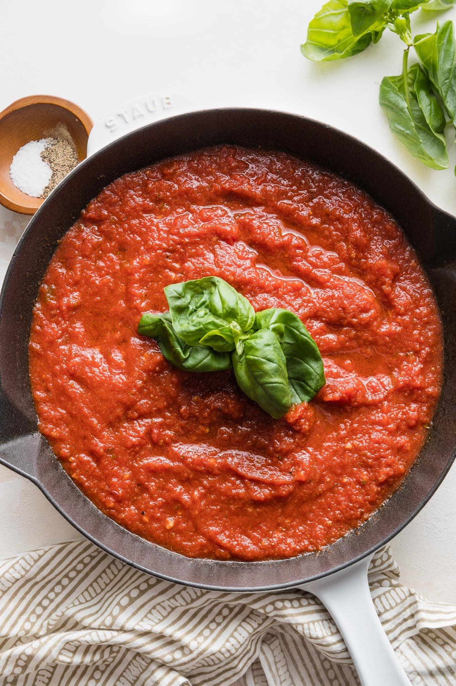

Marinara sauce is known for its rich, tomato based flavour. Capable of complimenting even the most basic dishes.
Today we will be learning how to make this delightful sauce.
Heat olive oil in a stockpot over medium heat. Add onion; cook and stir until softened, about 5 minutes.
Stir in tomatoes, garlic, and bay leaf. Bring to a boil; reduce heat to medium-low and simmer until tomatoes are soft, about 30 minutes.
Stir in red wine, honey, basil, oregano, marjoram, salt, black pepper, fennel seed, and crushed red pepper; simmer and cook until herbs have flavored the sauce, about 30 minutes more.
Add balsamic vinegar; still well to combine. Discard bay leaf.